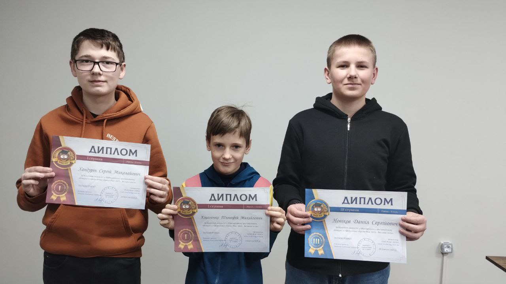

Наші вихованці – гордість гуртка!
05 квітня 2025

Юні вихованці гуртка "web-програмування" взяли участь у міжнародному конкурсі з інформатики «Брейн-ринг» та показали блискучі результати!
10 дипломів І ступеня отримали:
- Савостіна Надія
- Василенко Олександр
- Кіцаненко Тимофій
- Татарінова Валерія
- Кіяшко Анна
- Ремньов Матвій
- Панченко Максим
- Козлова Ольга
- Зубков Гліб
- Хандурін Сергій
2 дипломи ІІІ ступеня отримали:
- Рудейко Павло
- Новіков Данііл
Це результат наполегливої праці вихованців, допитливості та любові до світу інформаційних технологій. Пишаємось нашими талановитими дітьми та щиро бажаємо нових перемог, цікавих відкриттів і натхнення на шляху до ІТ-вершин!